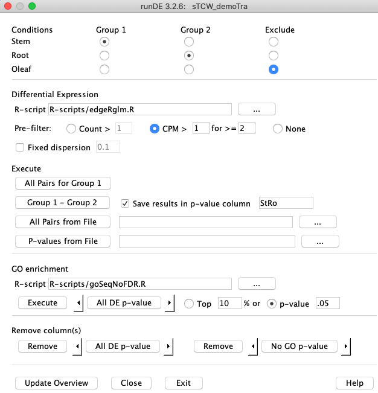
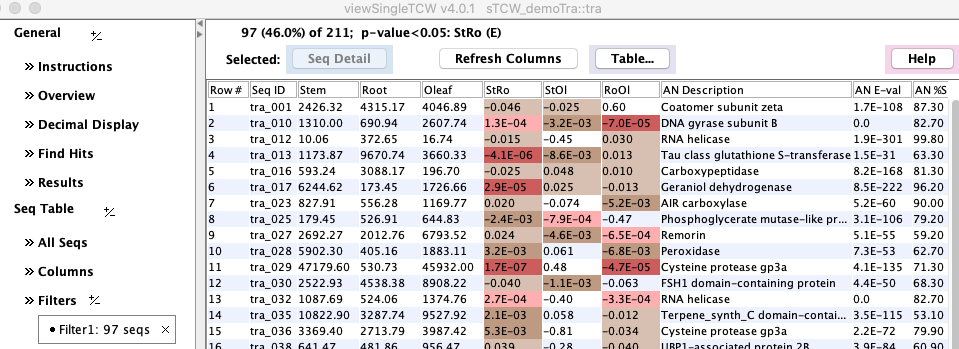
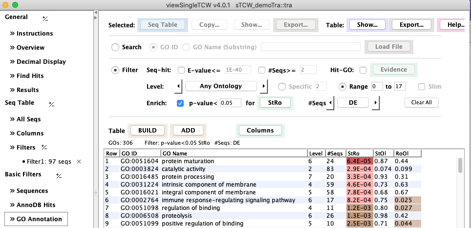
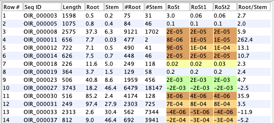

|
|
runDE - Differential Expression Guide |


|
|
|
|||
- DE per sequence: R-scripts for
EdgeR ,DESeq2 .- It is important that you study the documentation for the respective DE method to determine the best approach for your data. You may either use one of the existing scripts, customize an existing script, or create a new one.
- The R-scripts for DE sections explains how
runDE writes the data to R variables, executes the R-script, then reads the results into sTCWdb.
- GO enhancement: R-script for
GOseq .- Same comments above. See R-scripts for GO.
Contents:
- Installing R and packages
- Running the demo - Highly recommended to do this first
- DE between conditions
- GO enhancement
- Remove
- R-scripts
- R directory permissions
1. Installing R and packages
Installing R
- See R Project for the latest instructions on installing R.
- See MacOS for installation that worked on MacOS 10.15.
- See R directory permissions for some permission suggestions.
Installing rJava and R packages
- See rJava and R packages.
2. Example: demoTra | Go to top |
>runDE tra
Or, if you type |
Define a pairwise comparison by selecting "Stem" for
Check the box
Assuming you have installed
Execute The |
 |
{kind=link}
Execute DE output | Go to top |
> ****************************************************************
******** Start DE execution for column: StRo *********
****************************************************************
Replicates:
5 Stem
5 Root
Collecting count data (may take several minutes)
Using CPM filter > 1 for >= 2
1 filtered sequences
Assigning R variables
gc: GC values of sequences
rowNames: sequences (row) names
grpNames: group (column) names
repNames: replicate names
counts: counts of sequences
countData <- array(counts,dim=c(210,10))
rm(counts)
rownames(countData) <- rowNames
nGroup1 <- 5
nGroup2 <- 5
Start R-script
source('R-scripts/edgeRglm.R')
Loading required package: limma
Using traditional glm (quasi-likelihood F-tests)
results
rowNames
R-script done
Number of DE results:
<1e-5 <1e-4 <0.001 <0.01 <0.05
6 17 32 65 97
Saving 210 scores for StRo
Adding column to database...
.
Finished DE execution for StRo 0m:0s (8Mb)
Complete all Group1-Group2 for tra
The console is in R, you may run R commands -- q() or Cntl-C when done, or perform another Execute.
The R console remains open and you can now manually explore the data using R, if desired. However, it easiest to explore it be
selecting "Close" on
>q() Save workspace image? [y/n/c]: y RThis saves all variables written by
> library(edgeR) > plotBCV(y) > plotMDS(y, labels=grpNames)
Execute GO output | Go to top |
Trace output to stderr and Log file (append): projects/DElogs/tra.log Size: 11.0kb
****************************************************************
******** 1/1. GO enrichment for column: RoOl *********
****************************************************************
Assigning R variables
6,651 Numbers GOs
208 Sequences with GOs from 211 (98.6%)
seqNames: sequence names
seqLens: sequence lengths
nSeqs <- 211
seqDEs: DE binary vector (110 p-value < 0.05)
names(seqDEs) <- seqNames
seqGOs <- vector("list",nSeqs)
For all n: seqGOs[[n]] <- c(gonum list)
names( seqGOs) = seqNames ...
Start R-script
source('R-scripts/goSeqNoFDR.R')
Using manually entered categories.
Calculating the p-values...
oResults
goNums
R-script done
Saving 6,651 values to database
172 GO p-values < 0.05
Finished GO enrichment for RoOl 0m:1s
Summary:
ColName #DEseq (%) DEseq%GO DEavgLen DEstdLen avgPWF stdPWF #<0.05
RoOl 110 (52.9%) 82.3% 1073.89 679.84 0.528607 0.073576 172
Complete GO enrichment for tra
The console is in R, you may run R commands -- q() or Cntl-C when done, or perform another Execute.
The R console remains open and you can now manually explore the data using R, if desired.
However, it easiest to explore it be selecting
>q() Save workspace image? [y/n/c]: y RThis saves all variables written by runDE and the script. By restarting R, you can now explore the data for the last enrichment computation, e.g.
> library(goseq) > plotPWF(pwf)
GO output summary
At the end of execution, a summary will be printed to the terminal and log file. For example, if all enrichment p-values are computed for demoTra, the following will be output:
Summary:
ColName #DEseq (%) DEseq%GO DEavgLen DEstdLen avgPWF stdPWF #<0.05
StRo 97 (46.6%) 80.7% 1075.12 703.22 0.464116 0.000063 311
StOl 100 (48.1%) 79.5% 991.49 595.44 0.480768 0.065060 48
RoOl 110 (52.9%) 82.3% 1073.89 679.84 0.528607 0.073576 172
| ColName | The DE column used as input for the GO enrichment. |
| #DEseq (%) | The number of DE sequences for the DE column, where a sequence is DE based on the value
supplied ( |
| DEseq%GO | The percent of unique direct or inherited GOs for the set of DE sequences. Due to inheritance, this tends to be a high percentage. |
| DEavgLen | The average length of the DE sequences. |
| DEstdLen | The standard deviation of the length of the DE sequences. |
| avgPWF | The average of the PWF (Probability Weighting Function). |
| stdPWF | The standard deviation of the PWF. |
| #<0.05 | The number of GOs that have a enrichment p-value <0.05. |
View Results | Go to top |
View DE Results
|
To view the resulting p-values, run 'viewSingleTCW tra' from the command line,
and click |
|
{kind=link}

{kind=link}
The highlighting and significant digits can be changed by the Decimal Display panel.
View GO Enhancement Results
{kind=link}
3. DE between conditions
Methods & Options | Go to top |
R-script
The default R-script isPre-filter
This example uses a database with 48k sequences and 5 replicates for root and stem. The three filtering options were run with defaults (table on lower left) before input to
2 CPM (Counts per million) = (count/library size)*1M. |

The DE value (RoSt) is set to negative if Root<Stem. The columns prefixed with '#' are the counts, which are used by the filters. The columns with no prefix, Root and Stem, are the TPM values. |
{kind=link}
- DE value 3.00: the filtered sequences.
- DE value 2.00: assigned an NA from the DE computation.
To view the first 50 filtered sequences that do not have 'all' zero count values,
execute runDE with the ID or database name and a -v,
e.g. runDE OlR -v.
Using CPM filter > 1 for >= 2, the following shows the first few filtered sequences:
Rep Names Root1 Root2 Root3 Root4 Root5 Stem1 Stem2 Stem3 Stem4 Stem5 Lib Sizes 25267201 26691329 20806376 24815333 29748103 36131457 25997359 21874134 25691566 31637621 SeqID Counts : CpM OlR_000003 41 2 16 8 8 7 7 7 4 6 : 1.6 0.1 0.8 0.3 0.3 0.2 0.3 0.3 0.2 0.2 OlR_000016 23 5 37 21 17 26 16 12 13 23 : 0.9 0.2 1.8 0.8 0.6 0.7 0.6 0.5 0.5 0.7 OlR_000053 17 12 10 26 18 30 12 15 25 27 : 0.7 0.4 0.5 1.0 0.6 0.8 0.5 0.7 1.0 0.9 OlR_000063 18 4 21 15 10 24 20 19 24 26 : 0.7 0.1 1.0 0.6 0.3 0.7 0.8 0.9 0.9 0.8 OlR_000066 8 3 1 0 0 20 15 13 34 28 : 0.3 0.1 0.0 0.0 0.0 0.6 0.6 0.6 1.3 0.9 OlR_000083 11 12 13 22 12 11 15 2 3 6 : 0.4 0.4 0.6 0.9 0.4 0.3 0.6 0.1 0.1 0.2 OlR_000100 14 6 21 15 12 7 10 8 2 8 : 0.6 0.2 1.0 0.6 0.4 0.2 0.4 0.4 0.1 0.3 OlR_000162 11 10 7 17 5 8 15 7 18 10 : 0.4 0.4 0.3 0.7 0.2 0.2 0.6 0.3 0.7 0.3 OlR_000181 25 1 24 10 7 6 13 3 4 7 : 1.0 0.0 1.2 0.4 0.2 0.2 0.5 0.1 0.2 0.2Using Count > 10, the following shows the first few filtered sequences.
SeqID Root1 Root2 Root3 Root4 Root5 Stem1 Stem2 Stem3 Stem4 Stem5 OlR_000238 4 1 4 1 4 0 0 0 0 0 OlR_000264 8 2 5 2 7 1 0 0 0 1 OlR_000489 0 0 3 0 2 2 1 2 0 1 OlR_000519 0 0 2 0 0 0 0 0 0 0 OlR_000625 5 0 3 2 1 0 1 1 0 1 OlR_000642 7 3 6 4 9 5 4 1 9 8
Fixed dispersion
If there are not biological replicates, then it is necessary to set the dispersion. If it is not set, TCW will use 0.1 by default.
Execute | Go to top |
If multi-condition testing is desired, e.g. to find sequences reduced in condition A compared to
any or all of conditions B,C,D, then the recommended process is to compute the individual
pair DEs A-B, A-C, A-D, and then use filter options in
There are four options to add DE values to the sTCW database, as explained in the following four sections.
The DE p-value columns will be displayed in
All Pairs for Group 1 | Go to top |
- Only check conditions in Group 1.
- Results will be saved in the database with auto-generated column names.
- Execute: Each condition selected in group 1 will be pairwise compared; any selections in Group 2 are ignored.
Stem Root StRo Stem Oleaf StOl Root Oleaf RoOlwhere the last column is the generated column name.
Group 1 - Group 2
- Select at least one condition from each group.
- If you want to store the results in the database, check
Save results in P-value column . If the groups have been selected, a column name will be auto-generated which you can change. When you change the groups for a subsequent execution, uncheck-then-check the column box to auto-generated a name for the new groups. - Execute: The condition(s) in Group 1 will be compared with the condition(s) in group 2.
All Pairs from File | Go to top |
- Any checked conditions in
Group 1 andGroup 2 are ignored; the conditions to compare are specified in the file. - Results will be saved in the database with the provided column names.
- Execute: All pairs from the file will be compared with the selected method and options.
Root Stem RoSt Root Oleaf RoOl Stem Oleaf StmLea Root:Stem Oleaf RoSt_OlThe last row shows how to select two or more from Group 1; no spaces are allowed between the ":". Group 2 can only have one condition.
Keep the column names short but meaningful. A file similar to the above is in the projects/demoTra directory, filename traDE.tsv to allow user to try this option.
P-values from File | Go to top |
#Example p-value file Root Stem RoSt tra_001 0.14 tra_002 0.14 tra_003 0.65The p-values are read as absolute values since runDE makes values negative if Cond1<Cont2.
4. GO enrichment (over-represented categories) | Go to top |
R-script : Use the defaultgoSeqBH.R or supply your own.P-value columns : If one or more DE p-values have been added to the database, the <---> box will sayAll p-values ; this can be changed to compute GO enrichment for just one p-value column.P-value cutoff : Ap-value of 0.05 is the default; this applies to the DE p-value so that all sequences with a p-value<0.05 will be considered DE (which assumes FDR correction was applied). Since the DE p-values still contain considerable uncertainty as absolute measures of probability, there is an option to defined DE in terms of ranking, i.e., top 10% (the ranking is ordered by the p-values).
The result is a p-value column for the GOs, having
the same names as the corresponding sequence DE columns, accessible through the
5. Remove | Go to top |
6. R-scripts
R-scripts for DE | Go to top |
- Writes the necessary information to the R environment based on the options selected.
- Runs the R-script using the source command.
- Reads the results variable from the R environment, which should contain the p-values.
> gc: GC values of sequences
rowNames: sequences (row) names
grpNames: group (column) names
repNames: replicate names
counts: counts of sequences
countData <- array(counts,dim=c(210,10))
rm(counts)
rownames(countData) <- rowNames
nGroup1 <- 5
nGroup2 <- 5
The variables displayed with a ":" after them are assigned with the assign function, whereas the others are the exact assignment.
The most important variables are countData and grpNames, e.g.
> head(countData)
[,1] [,2] [,3] [,4] [,5] [,6] [,7] [,8] [,9] [,10]
tra_001 1017 594 1222 1209 1315 378 1002 1649 826 1195
tra_002 272 239 431 400 368 101 206 151 109 185
tra_003 3830 5185 4847 4857 5451 1859 2506 1334 1541 2307
tra_004 1707 1088 2429 2210 2334 529 919 1103 810 1427
tra_005 479 369 439 444 565 114 192 151 232 351
tra_006 1122 923 1381 1320 1482 632 839 905 670 823
> grpNames
[1] "Stem" "Stem" "Stem" "Stem" "Stem" "Root" "Root" "Root" "Root" "Root"
The R-script should put the p-values in the results variable, e.g.
> head(results)
[1] 1.537634e-07 1.695981e-07 2.478791e-07 2.478791e-07 4.026519e-06
[6] 4.600047e-06
The order should correspond to the input order; if changed, then change the order in rowNames to correspond.
An example script is:
# edgeR glm method unless no replicates
library(edgeR)
y <- DGEList(counts=countData,group=grpNames)
y <- calcNormFactors(y)
if (nGroup1==1 && nGroup2==1) {
writeLines("Using classic with fixed dispersion")
et <- exactTest(y, dispersion=disp)
res <- topTags(et, n=nrow(et), adjust.method="BH")
} else {
writeLines("Using traditional glm")
design <- model.matrix(~grpNames)
y <- estimateDisp(y, design)
fit <- glmQLFit(y,design)
qlf <- glmQLFTest(fit,coef=2)
res <- topTags(qlf, n=nrow(qlf), adjust.method="BH")
}
# Columns are: logFC logCPM F PValue FDR
results <- res$table$FDR
rowNames <- rownames(res)
R-scripts for GO | Go to top |
Assigning R variables
6,651 Numbers GOs
208 Sequences with GOs from 211 (98.6%)
seqNames: sequence names
seqLens: sequence lengths
nSeqs <- 211
seqDEs: DE binary vector (97 p-value < 0.05)
names(seqDEs) <- seqNames
seqGOs <- vector("list",nSeqs)
For all n: seqGOs[[n]] <- c(gonum list)
names( seqGOs) = seqNames
The GOs assigned to each sequence are both the direct and indirect.
The p-values to be loaded must be in oResults and the associated GO numbers are in goNums (note that TCW removes the "GO:" prefix and just used the number). If the R-script file name contains "goseq" (case-insensitive) , it expects the variable pwf (case-sensitive) to exist.
The following is the
# goSeq with Benjamini and Hochberg FDR suppressPackageStartupMessages(library(goseq)) pwf <- nullp(seqDEs,'','',seqLens,FALSE) GO.wall <- goseq(pwf,'','',seqGOs) goNums <- GO.wall$category oResults <- p.adjust(GO.wall$over_represented_pvalue, method="BH")
FDR
According to the GOseq Manual: "Having performed the GO analysis, you may now wish to interpret the results. If you wish to identify categories significantly enriched/unenriched below some p-value cutoff, it is necessary to first apply some kind of multiple hypothesis testing correction. For example, GO categories over enriched using a .05 FDR cutoff [Benjamini and Hochberg, 1995] are:"> enriched.GO=GO.wall$category[p.adjust(GO.wall$over_represented_pvalue, + method="BH")<.05]Hence, the values loaded into "oResults" for the TCW supplied goSeqBH.R:
oResults <- p.adjust(GO.wall$over_represented_pvalue, method="BH")The p.adjust methods are: c("holm", "hochberg", "hommel", "bonferroni", "BH", "BY", "fdr", "none")
demoTra: The TCW supplied demo result in 0 p-values<0.05. In order to view some p-values<0.05 results for the demo, use goSeqNoFDR.R, which has no multiple testing correction.
Naming R-scripts and Overview | Go to top |
DE (Differential Expression) computation:
Column Method Conditions
StRo edgeRglm.R Stem : Root
StOl edgeRglm.R Stem : Oleaf
RoOl edgeRglm.R Root : Oleaf
GO enrichment computation:
Column Method Cutoff
StRo goSeqNoFDR.R 0.0500
StOl goSeqNoFDR.R 0.0500
RoOl goSeqNoFDR.R 0.0500
7. R Directory Permissions | Go to top |
Unless you plan to run as root (not recommended),
or will be the only one running
When you install an R package, it can go either to a shared location or to a user-specific location. Installing to the shared location is better, as others can then use the package, however in the default installation of R the shared directories are owned by the root user and their permissions must be changed to allow ordinary users to install shared packages. This is done as follows (unless you have sudo access, you will need an administrator to do this):
- Run R (by typing "R")
- In R, use Sys.getenv("R_HOME") to find the R installation directory (usually /usr/lib64/R)
- Exit from R with command "q()"
- ls /usr/lib64/R (or wherever the R_HOME was)
- The directory listing should have a library subdirectory; if not, R is not installed right
- Change permissions on the library directory (and everything under it) such that ordinary users can write to it. Ideally there is an appropriate user group and you can use chgrp -R <group> library and chmod -R g+w library to give this group write permissions. Otherwise, chmod -R 777 library will be necessary.